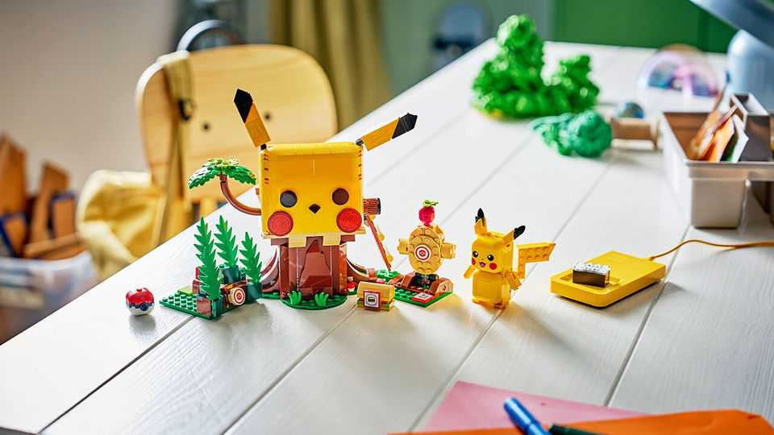

Lego, Pokémon and the future of fun
Toys and media brands are increasingly joining forces
June 4th 2026

Lego executives tried valiantly to present their latest products on June 2nd amid a din of chirping, croaking and snoring. The toy giant’s newest range is part of a collaboration with Pokémon, a Japanese brand that has evolved from video game to multi-media phenomenon. Built-in chips let the creatures train, battle and noisily chat when put near each other.
Pokémon is the latest in a growing line of Lego tie-ups with media brands. Since the success of a Star Wars set in 1999, the Danish firm has sought licences everywhere from gaming (Nintendo) and Hollywood (Harry Potter) to sport (Formula One). Generic pirates and spacemen are increasingly squeezed off store shelves by the likes of Super Mario. Toys based on licensed intellectual property (IP) provide more than half of Lego’s $13bn annual revenue, estimates Circana, a research firm.
The brickmaker is not the only example. Hasbro’s Monopoly has versions that license everything from James Bond to Barbie. Funko, which makes the wildly popular Pop! dolls, offers likenesses based on athletes, actors and much else. Its slogan—“Everyone is a fan of something”—sums up the idea. The share of global toy sales based on licensed IP has risen from 25% to 37% in the past seven years, says Frédérique Tutt of Circana.
Lego shows how the strategy can work. Tapping into another brand’s fanbase is less risky than investing in a new line of your own. It is also more agile: last year Lego went big on “Jurassic World” sets to coincide with a new movie; this year it will capitalise on Pokémon’s 30th anniversary. IP also attracts adults, who might not buy an ordinary Lego castle but could be tempted by a $650 replica of one from “Lord of the Rings”. Changing from a kids’ company into an all-ages pop-culture brand has helped to nearly double Lego’s annual revenue since 2020, to over twice that of Mattel, its nearest rival.
Working with partners isn’t easy. Pokémon staff made weekly trips to Lego’s headquarters in Billund. Twenty-five new types of brick were needed to get details like Pikachu’s arms and Jigglypuff’s ears right. And Lego has to send licensees a cut of sales—though the generally higher prices of its branded sets suggest it is passing some of the cost on to consumers.
Fast-moving online culture also presents challenges. Julia Goldin, Lego’s marketing and product chief, says that social media make it easier than ever to spot trends—but harder to know which will endure. Creating a new Lego range takes a good 18 months, longer than the lead-time for firms making card games or plush toys. Lego’s take on “KPop Demon Hunters”, a surprise blockbuster film last summer, will not be out until later this year.
The company emphasises that it still builds its own brands. Botanicals, a newish floral range aimed at adults, will probably be its best-selling line this year. But third-party IP seems to be what its customers crave. On Lego Ideas, a forum run by the company where fans suggest new themes, requests include a “Happy Days” diner and a “Scooby-Doo” haunted house. Time for children—and perhaps adults—to make more space on the toy shelf. ■
To track the trends shaping commerce, industry and technology, sign up to “The Bottom Line”, our weekly subscriber-only newsletter on global business.